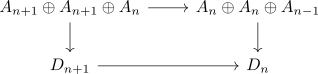
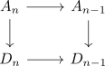

chain homotopy as chain map with interval
Proposition
Let $R$ be a ring, $\mathrm{RMod}$ the category RMod and $\mathrm{Ch_*}(\mathrm{RMod})$ be the category of chain complexex. Let $A_*,B_*$ be chain complexes, $I$ be the interval chain complex of modules and $I \otimes_R A_*$ be the sum total complex with the interval.
Let $f,g: A_* \rightarrow B_*$ be chain maps.
Then a chain homotopy
\begin{align*}
h_{n}: A_n \rightarrow B_{n+1}
\end{align*}
is precisely given by a chain map
\begin{align*}
H: (I \otimes_R A_*) \rightarrow B_*
(x,y,z) \mapsto& (g_n(x) + f_n(y) + h_{n-1}(z))
\end{align*}
Proof
Let
\begin{align*}
H: A_n \oplus A_{n} \oplus A_{n-1} \rightarrow& D_{n} \\
(x,y,z) \mapsto& (g_n(x) + f_n(y) + h_{n-1}(z)
\end{align*}
Then it remains to show that following diagram

commutes
for $(x,y,z) \in A_{n+1} \oplus A_{n+1} \oplus A_{n}$ it follows
\begin{align*}
H d_{I \otimes A)(x,y,z) =& h(d(x) + z, d(y) - z, - d(z)) \\
=& g_n(d(x)) + g_n(z) + f_n(d(y)) - f_n(z), h_{n-1}(d(z)) \\
\end{align*}
and
\begin{align*}
d_D \circ H(x,y,z) =& d_D( g_n(x) + f_n(y) + h_{n-1}) \\
=& d_D(g_n(x)) + d_D(f_n(y)) + d_D(h_{n-1})
\end{align*}
hence it
\begin{align*}
d_D(g_n(x)) + d_D(f_n(y)) + d_D(h_{n-1}(z)) =& g_n(d(x)) + g_n(z) + f_n(d(y)) - f_n(z), h_{n-1}(d(z)) && \vert - g_n(d(x)) - f_n(d(y)) - d_D(h_{n-1}(z)) \\
d_D(g_n(x)) - g_n(d(x)) + d_D(f_n(y)) - f_n(d(y)) =& g_n(z) - f_n(z) + h_{n-1}(d(z)) - d_D(h_{n-1}(z))
\end{align*}
here by commutativity of

it follows, that
\begin{align*}
d_D(g_n(x)) - g_n(d(x)) + d_D(f_n(y)) - f_n(d(y)) =& 0
\end{align*}
Thus
\begin{align*}
d_D(g_n(x)) - g_n(d(x)) + d_D(f_n(y)) - f_n(d(y)) =& g_n(z) - f_n(z) + h_{n-1}(d(z)) - d_D(h_{n-1}(z)) && \vert - (g_n(z) - f_n(z)) \\
f_n(z) - g_n(z) =& h_{n-1}(d(z)) - d_D(h_{n-1})
\end{align*})
Hence $h_{n}$ is a chain homotopy.
Going through the argument backwards gives the implication chain homotopy $\implies$ chain map